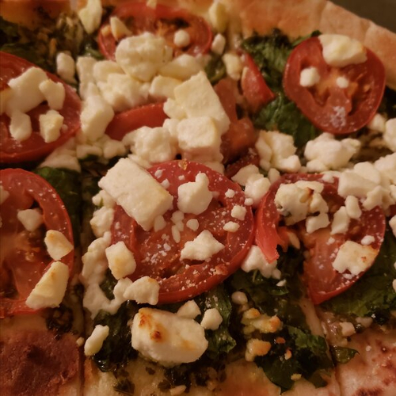

Pesto Pizza

Description
This oven baked pizza is a wonderful combination of flavors.
The pesto and feta compliment one another extremely well.
With a short list of ingredients this pizza is a quick fix.
Add olive oil on top of the finished pizza for an extra rich flavor.
Ingredients
- 1 (12 in) pre-baked pizza crust
- 1/2 cup pesto
- 1 ripe tomato, chopped
- 1/2 cup green bell pepper, chopped
- 1 (2 oz.) can chopped black olives, drained
- 1/2 small red onion, chopped
- 1 (4 ounce) can artichoke hearts, drained and sliced
- 1 cup crumbled feta cheese
Steps
- Preheat oven to 450 degrees F (230 degrees C).
- Spread pesto on pizza crust. Top with tomatoes, bell peppers, olives,
red onions, artichoke hearts and feta cheese.
- Bake for 8 to 10 minutes, or until cheese is melted and browned.